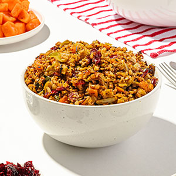

Sweet Potatoes (Crock Pot)
serves 4-6
- 4-6 medium Sweet Potatoes ; peeled + sliced
- 1 cup Brown sugar
- 3 tbsp Cornstarch
- 1 tsp Cinnamon
- 1/2 tsp salt
- 1-2 tbsp Butter
- Lightly butter the slow cooker
- Add sliced sweet potatoes + sprinkle with salt
- Combine sugar, cornstarch + cinnamon
- Sprinkle over sweet potatoes
- Dot with butter
- Cover and cook on low for 7-9 hours
Content for New article Tag Goes Here
Herb Stuffing
serves 4-6

- 1 medium Onion minced
- 1 tbsp Parsley
- 2 tbsp Butter
- 2 cups soft stale Bread crumbs
- 1/4 tsp Thyme, Marjoram + Rosemary
- Salt + Pepper
- Mix all ingredients + moisten with a little water
Content for New article Tag Goes Here
Chicken Parmingiana
serves 4
- 3 Chicken breasts - skinned + deboned
- 1 Egg beaten
- 1 cup Bread crumbs
- 1 tbsp Margarine
- 1 jar (28oz) Spaghetti sauce
- 1/2 cups Water
- 3-4 slices Mozzarella cheese
- 1/4 cups grated Parmesan
- Noodles
- Dip chicken in egg the bread crumbs
- Brown in Margarine
- Place in baking dish
- Pour on 1/2 sauce
- Cover with mozzarella
- Pour on remaining sauce + sprinkle with parmesan
- Bake 350 degrees for 45 mins
- Serve over noodles
Content for New article Tag Goes Here
Zucchini Bread
serves 8-10
- 2 cups shifted All purpose flour
- 2 tsp Baking soda
- 1 tsp Salt
- 1/4 tsp Baking powder
- 3 tsp ground Cinnamon
- 3 Eggs
- 1 cup Vegetable oil
- 1 1/2 cups Sugar
- 2 cups grated Zucchini
- 2 tsp Vanilla
- 1 cup Chocolate chips
- Sift flour, baking soda, salt, baking powder and cinnamon onto waxed paper
- Combine eggs, oil, suga, zucchini and vanill. Beat until well mixed
- Stir in flour mixture until smooth. Stir in chocolate chip
- Pour into greased 13x9x2" pan
- Bake at 350 degrees for 40 minutes
Content for New article Tag Goes Here
Apple Pie
serves 8

- Crust
- 6-7 medium Apples
- 1/4 - 1/2 cup Sugar
- 2 tbsp Cornstarch
- 1/2 tsp Cinnamon
- 1/4 tsp Nutmeg
- 1/3 cup Corn syrup
- 1 tbsp Lemon juice
- Preheat oven to 450 degrees
- Perpare pastry
- Slice apples into pastry shell
- Combine remaining ingredients + pour over apples
- Cover with crust
- Seal edge
- Bake 450 degrees for 15 minutes
- Reduce heat to 375 degrees + continue to bake 30 minutes longer
Content for New article Tag Goes Here
Content for New main Tag Goes Here